Forecasting Unemployment rate n Australia using Bayesian VARs with Regime change
Abstract. Research on how Bayesian VARs with regime change affect the forecasting of unemployment rate in Australia
Keywords. bsvars, minnesota, dummy-observation, regime change, forecasting, R,
Introduction
The objective of this research project is to develop a Bayesian Vector Autoregression (BVAR) model incorporating regime changes to analyse the dynamic relationships among macroeconomic variables, assess their impact on the unemployment rate over different economic regimes through time-varying parameters, and enhance forecasting accuracy.
The question to be addressed in this research is: Can a Bayesian VAR model with regime changes accurately capture shifts in the relationships between unemployment rate and other macroeconomic variables for improved forecasting performance?
Motivation
Understanding the impact of economic regime changes on the unemployment rate dynamics holds substantial importance in grasping the complexities of the labour market. The labour market is highly susceptible to various shocks and policy interventions, making accurate forecasting of the unemployment rate crucial for informed decision-making. By employing a Bayesian Vector Autoregression (BVAR) model that allows the parameters to vary across different economic regimes, we can gain a nuanced understanding of how the unemployment rate responds to diverse economic conditions and the efficacy of policies. This research enhances forecasting accuracy and offers valuable insights into the underlying drivers of unemployment fluctuations. By better understanding these dynamics, policymakers can make more informed decisions to counter economic instability.
Data properties
For the investigation of the problem at hand, the selection of variables includes a comprehensive set of economic indicators and demographic factors that are crucial for understanding labour market dynamics and their impact on unemployment rates.
For instance, GDP growth provides a broad measure of economic activity, serving as an indicator of overall labour market. Consumer price index, wage price index and interest rate reflect macroeconomic conditions and monetary policy, influencing consumer spending, business investment, and hiring decisions, thereby affecting unemployment trends. Government spending impacts aggregate demand and employment levels, while demographic factors such as population growth rate, average age of the workforce, and level of highest educational attainment offer insights into labour force participation and composition. For the purpose of this research, the variables are GDP, wage price index and inflation.
Each variable’s form/transformation will depend on its specific characteristics and the nature of its relationship with unemployment. For instance, variables like GDP may be included in their original form, while others, such as wpi might need to be computed from the index data.
It’s important to note that all data will be quarterly since the interest forecasting for unemployment will be conducted at a quarterly frequency. Quarterly frequency is suitable for capturing the diverse movements influencing unemployment, including short-term shocks, long-term trends, and policy changes, providing a balanced perspective.
\[\begin{align*} & unmp_{t} & : & \text{Unemployment rate} \\ & gdp_{t} & : & \text{GDP per capita: Chain volume measures - Percentage changes} \\ & wpi_{t} & : & \text{Wage price index} \\ & cashrate_{t} & : & \text{Cash rate} \\ \end{align*}\]
Data Visualisation
Figure 1: Time series plots
To stabilize the variance, log tranformation is performed on all variables except unemployment rate.

Figure 1: Transformed Time series plots
From the plot of the variables, some show stationary and some non-stationary, which can create some challenges in general analysis . Therefore, the ACF test is performed to identify patterns and trend.

Figure 2: ACF plots
The ACF plots show the variables have persistence or dependence in the data as the they are slowly decaying, indicates that there is a strong correlation between each variable and its past values, though this auto correlations decrease as lags increase.

Figure 3: PACF plots
The PACF plots show high autocorrelation at lag 1, and have clear cut offs.
The ADF is performed to further determine the stationary properties of the data. Null hypothesis: a unit root is present Alternative hypothesis: stationary
Dickey_Fuller p_value
unmp_df -2.545 0.350
gdp_df -1.826 0.649
wpi_df -2.265 0.467
cashrate_df -3.409 0.056Model
Hypothesis
Var(p) model \[\begin{aligned} y_t = \beta_0 + \beta_1 y_{t-1} + \beta_2 x_{1, t-1} + \beta_3 x_{2, t-1} + \ldots + \beta_n x_{n, t-1} + \varepsilon_t \end{aligned}\] Var(p) model with regime change, meaning time-varying parameters \[\begin{aligned} y_t &= \beta_{0,S_t} + \beta_{1,S_t} y_{t-1} + \beta_{2,S_t} x_{1, t-1} + \beta_{3,S_t} x_{2, t-1} + \ldots + \beta_{n,S_t} x_{n, t-1} + \varepsilon_t \\ \end{aligned}\] Probability of transitioning from one state to another \[\begin{aligned} P(S_t = j | S_{t-1} = i) &= \pi_{ij} \end{aligned}\]Matrix form
\[\begin{align*} \mathbf{Y}_t = \boldsymbol{\beta}_{S_t} \mathbf{X}_t + \boldsymbol{E}_t \end{align*}\]
\[\begin{align*} \boldsymbol{E}_t \sim MN(0_T, \Sigma, I_T) \end{align*}\]
\begin{align*} \mathbf{Y}_t & : \text{Matrix of response variables} \\ \boldsymbol{\beta} & : \text{Coefficient matrix corresponding to regime state} \\ S_t & : \text{Regime state} \\ \mathbf{X}_t & : \text{Matrix of predictor variables} \\ \boldsymbol{\varepsilon}_t & : \text{Error term vector} \end{align*}
\begin{align*} \mathbf{Y}_t = \begin{pmatrix} \text{Unemployment}_t \\ \text{GDP}_t \\ \text{WPI}_t \\ \text{CashRate}_t \\ \end{pmatrix} \end{align*}
The model’s equations include time-varying parameters, such as the coefficients of lagged variables, which adapt to changing economic conditions.
Basic Model
The model follows the Normal Inverse Wishart distribution.
Likelihood function kernel \[\begin{align} L(A,\Sigma|Y,X) \propto det(\Sigma)^{-\frac{T}{2}}exp\{-\frac{1}{2}tr[\Sigma^{-1}(Y-XA)'(Y-XA)]\} \end{align}\]
Minnesota Prior distribution
The Minnesota prior is commonly used in Bayesian Vector Autoregression (BVAR) models due to its ability to impose shrinkage towards zero on the coefficients, effectively regularizing the estimation process. The Minnesota prior aligns effectively with the stylized fact of nonstationarity observed in macroeconomic variables.
\[\begin{align*} p(A, \Sigma) = p(A \mid \Sigma) \cdot p(\Sigma) \\ A \mid \Sigma \sim \text{MN}_{K \times N} (\underline{A}, \Sigma, \underline{V}) \\ \Sigma \sim \text{IW}_{N} (\underline{S}, \underline{v})\\ \end{align*}\]
With lags = 4 and N = 4
\[\begin{align*} \underline{A} = \begin{bmatrix} \mathbf{0}_{4 \times 1} & \mathbf{I}_{4} & \mathbf{0}_{4 \times (4-1)4} \end{bmatrix}' = \begin{bmatrix} 0 & 1 & 0 & 0 & 0 & 0 & 0 & 0 & 0 & 0 & 0 & 0 & 0 & 0 & 0 & 0 & 0\\ 0 & 0 & 1 & 0 & 0 & 0 & 0 & 0 & 0 & 0 & 0 & 0 & 0 & 0 & 0 & 0 & 0\\ 0 & 0 & 0 & 1 & 0 & 0 & 0 & 0 & 0 & 0 & 0 & 0 & 0 & 0 & 0 & 0 & 0\\ 0 & 0 & 0 & 0 & 1 & 0 & 0 & 0 & 0 & 0 & 0 & 0 & 0 & 0 & 0 & 0 & 0\\ \end{bmatrix}' \end{align*}\]
The column-specific prior covariance of A \[\begin{align*} \underline{V} &= \text{diag}\left( \begin{bmatrix} k_2 & k_1(\mathbf{p}^{-2} \otimes 1'_4) \end{bmatrix} \right)\\ \mathbf{p} &= \begin{bmatrix} 1 & 2 & 3 & 4 \\ \end{bmatrix} \end{align*}\] \[\begin{align*} & k_2 : \text{overall shrinkage for the constant term} \\ & k_1 : \text{overall shrinkage levels for autoregressive slopes} \\ \end{align*}\]
Prior covariance matrix \[\begin{bmatrix} k_2 & 0 & 0 & 0 & 0 & 0 & 0 & 0 & 0 & \cdots & 0\\ 0 & k_1 & 0 & 0 & 0 & 0 & 0 & 0 & 0 & \cdots & 0\\ 0 & 0 & k_1 & 0 & 0 & 0 & 0 & 0 & 0 & \cdots & 0\\ 0 & 0 & 0 & k_1 & 0 & 0 & 0 & 0 & 0 & \cdots & 0\\ 0 & 0 & 0 & 0 & k_1 & 0 & 0 & 0 & 0 & \cdots & 0\\ 0 & 0 & 0 & 0 & 0 & \frac{k_1}{4} & 0 & 0 & 0 & \cdots & 0\\ 0 & 0 & 0 & 0 & 0 & 0 & \frac{k_1}{4} & 0 & 0 & \cdots & 0\\ 0 & 0 & 0 & 0 & 0 & 0 & 0 & \frac{k_1}{4} & 0 & \cdots & 0\\ 0 & 0 & 0 & 0 & 0 & 0 & 0 & 0 & \frac{k_1}{4} & \cdots & 0\\ \vdots & \vdots & \vdots & \vdots & \vdots & \vdots & \vdots & \vdots & \vdots & \ddots & 0 \\ 0 & 0 & 0 & 0 & 0 & 0 & 0 & 0 & 0 & 0 & \frac{k_1}{16} \end{bmatrix}\]The joint posterior distribution
\[\begin{align*} p(A,\Sigma|Y,X) &\propto L(A,\Sigma|Y,X)p(A,\Sigma) \\ &= L(A,\Sigma|Y,X)p(A|\Sigma)p(\Sigma) \end{align*}\]
\[\begin{align} p(A,\Sigma|Y,X) &\propto \det(\Sigma)^{-\frac{T}{2}} \\ &\times exp\{-\frac{1}{2}tr[\Sigma^{-1}(Y-XA)'(Y-XA)]\} \\ &\times \det(\Sigma)^{-\frac{N+K+\underline{v}+1}{2}} \\ &\times exp\{-\frac{1}{2}tr[\Sigma^{-1}(A-\underline{A}) \underline{V}^{-1}(A-\underline{A})]\} \\ &\times exp\{-\frac{1}{2}tr[\Sigma^{-1}\underline{S}]\} \end{align}\]
The full conditional joint posterior have the following form \[\begin{align} p(A|Y,X,\Sigma) &\sim MN_{K \times N}(\overline{A}, \Sigma,\overline{V} ) \\ p(\Sigma|Y,X) &\sim IW_{N}(\overline{S}, \overline{v})\\ \\ \overline{V} &= (X'X + \underline{V}^{-1})^{-1} \\ \overline{A} &= \overline{V}(X'Y+\underline{V}^{-1}\underline{A}) \\ \overline{v} &= T + \underline{v} \\ \overline{S} &= \underline{S}+Y'Y+\underline{A}'\underline{V}^{-1}\underline{A}-\overline{A}' \overline{V}^{-1}\overline{A} \\ \end{align}\]
The posterior draws are obtain with the following code
###############################################
# Posterior draws Normal-inverse Wishart
###############################################
posterior_draws = function (S, Y, X, A.prior, V.prior, S.prior, nu.prior){
# Posterior parameters
V.bar.inv = t(X)%*%X + diag(1/diag(V.prior))
V.bar = solve(V.bar.inv)
A.bar = V.bar%*%(t(X)%*%Y + diag(1/diag(V.prior))%*%A.prior)
nu.bar = nrow(Y) + nu.prior
S.bar = S.prior + t(Y)%*%Y + t(A.prior)%*%diag(1/diag(V.prior))%*%A.prior -
t(A.bar)%*%V.bar.inv%*%A.bar
S.bar.inv = solve(S.bar)
# Posterior draws
Sigma.posterior = rWishart(S, df=nu.bar, Sigma=S.bar.inv)
Sigma.posterior = apply(Sigma.posterior,3,solve)
Sigma.posterior = array(Sigma.posterior,c(N,N,S))
A.posterior = array(rnorm(prod(c(dim(A.bar),S))),c(dim(A.bar),S))
L = t(chol(V.bar))
for (s in 1:S){
A.posterior[,,s]= A.bar + L%*%A.posterior[,,s]%*%chol(Sigma.posterior[,,s])
}
output = list(A.posterior=A.posterior, Sigma.posterior=Sigma.posterior)
return(output)
}
sample_minnesota = posterior_draws(S=50000, Y, X, A.prior, V.prior, S.prior, nu.prior)
sample_minnesota_A = sample_minnesota$A.posterior
sample_minnesota_Sigma = sample_minnesota$Sigma.posteriorExtension 1: Dummy observation prior
Cointegration is when the non-stationary variables have an equilibrium long term relationship or a common trend. The model is extended to incorporate dummy-observation-prior, aiming to account for the potential cointegration amongst the variables, capturing the underlying economic relationships and dynamics.
This approach allows us to leverage both the observed data and additional information about the structural relationships among variables, leading to more accurate parameter estimation and potentially improved forecasting performance.
Dummy observation prior also known as known as “sum-of-coefficients” proposed by Doan, Litterman, and Sims (1984) required a set of artificial observations for each variable.
\[\begin{align*} \underset{4\times 4}y^{+} &= diag(\frac{\overline{y_0}}{\mu}) \\ \underset{4 \times (1+4\times 4)}{x^{+}} &= [\underset{n \times 1}0,y^{+},...,y^{+}] \end{align*}\]
To be consistent with cointegration, an additional prior proposed by Sims (1993) is also added.
\[\begin{align*} \underset{1\times 4}y^{++} &= \frac{\overline{y_0}^{'}}{\delta}, , \ i =1,2,3,4\\ \underset{1 \times (1+4\times 4)}{x^{++}} &= [\frac{1}{\delta},y^{++},...,y^{++}]\\ \end{align*}\] \[\begin{align*} & \overline{y_0} : \text{average of the first 4 lag observations for each variable}\\ & \mu: \text{controls variance }\\ & \delta: \text{controls the tightness of the prior} \end{align*}\]
From the above, the following matrix form is created:
\[\begin{align*} Y^{+} & = \begin{bmatrix} y^+ \\ y^{++}\end{bmatrix}', X^{+} = \begin{bmatrix} x^+ \\ x^{++}\end{bmatrix}'\\ Y^{+} & = X^{+}A+E^{+} \\ Y^{+} & = \begin{bmatrix} \frac{\overline{y_0}_1}{\mu} & 0 & 0 & 0 \\ 0 & \frac{\overline{y_0}_2}{\mu} & 0 & 0 \\ 0 & 0 & \frac{\overline{y_0}_3}{\mu} & 0 \\ 0 & 0 & 0 & \frac{\overline{y_0}_4}{\mu} \\ \frac{\overline{y_0}_1}{\delta} & \frac{\overline{y_0}_2}{\delta} & \frac{\overline{y_0}_3}{\delta} & \frac{\overline{y_0}_4}{\delta} \\ \end{bmatrix} \end{align*}\]
\[\begin{align*} X^{+} = \begin{bmatrix} 0 & \frac{\overline{y_0}_1}{\mu} & 0 & 0 & 0 & \cdots & 0 \\ 0 & 0 & \frac{\overline{y_0}_2}{\mu} & 0 & 0 & \cdots & 0 \\ 0 & 0 & 0 & \frac{\overline{y_0}_3}{\mu} & 0 & \cdots & 0 \\ 0 & 0 & 0 & 0 & \frac{\overline{y_0}_4}{\mu} & \cdots & \frac{\overline{y_0}_4}{\mu} \\ \frac{1}{\delta} & \frac{\overline{y_0}_1}{\delta} & \frac{\overline{y_0}_2}{\delta} & \frac{\overline{y_0}_3}{\delta} & \frac{\overline{y_0}_4}{\delta} & \cdots & \frac{\overline{y_0}_4}{\delta} \\ \end{bmatrix} \end{align*}\]
The prior distribution is
\[\begin{align*} A \mid \Sigma &\sim \text{MN}_{K \times N} (\underline{A}^{+}, \Sigma, \underline{V}^{+}) \\ \Sigma &\sim \text{IW}_{N} (\underline{S}^{+}, \underline{v}^{+})\\ \\ \underline{A}^{+} &= (X^{+'}X )^{-1}X^{+'}Y^{+} \\ \underline{V}^{+} &= (X^{+'}X )^{-1} \\ \underline{v}^{+} &= T^{+} - K - N - 1\\ \underline{S}^{+} &= (Y^{+}-X^{+}\underline{A}^{+})^{'}(Y^{+}-X^{+}\underline{A}^{+})\\ \end{align*}\]
Minnesota and dummy observation prior distribution
The newly created matrix specified the model has 5 dummy observations. The above prior distribution is likely to encounter the problem of not having enough observations and lead to many challenges to meet the requirements for degree of freedom or invertibility of matrices. To resolve this, the combination of specifying the prior through both Normal inverse Wishart and dummy-observations is proposed, which is derived similarly to the posterior distribution in the basic model.
\[\begin{align*} A \mid \Sigma &\sim \text{MN}_{K \times N} (\widetilde{A}, \Sigma, \widetilde{V}) \\ \Sigma &\sim \text{IW}_{N} (\widetilde{S}, \widetilde{v})\\ \\ \widetilde{A} &= \widetilde{V}(X^{+'}Y^{+}+\underline{V}^{-1}\underline{A}) \\ \widetilde{V} &= (X^{+'}X^{+} + \underline{V}^{-1})^{-1} \\ \widetilde{v} &= T^{+} + \underline{v} \\ \widetilde{S} &= \underline{S}+Y^{+'}Y^{+}+\underline{A}'\underline{V}^{-1}\underline{A} -\widetilde{A}'\widetilde{V}^{-1}\widetilde{A} \\ \end{align*}\]
The full conditional joint posterior have the following form \[\begin{align} p(A|Y,X,\Sigma) &\sim MN_{K \times N}(\overline{A}, \Sigma,\overline{V} ) \\ p(\Sigma|Y,X) &\sim IW_{N}(\overline{S}, \overline{v})\\ \\ \overline{V} &= (X'X + \widetilde{V}^{-1})^{-1} \\ \overline{A} &= \overline{V}(X'Y+\widetilde{V}^{-1}\widetilde{A}) \\ \overline{v} &= T + \widetilde{v} \\ \overline{S} &= \widetilde{S}+Y'Y+\widetilde{A}'\widetilde{V}^{-1}\widetilde{A}-\overline{A}' \overline{V}^{-1}\overline{A} \\ \end{align}\]
The posterior draws are obtain with the following code
###############################################
# Posterior draws for dummy prior
###############################################
posterior_draws_dummy = function(S, Y, X, A.prior, V.prior, S.prior, nu.prior) {
N = ncol(Y)
p = (ncol(X) - 1)/N
mu = 1000
delta = 1000
dim(X)
avg_unmp <- mean(X[1, c(2, 6, 10, 14)])
avg_gdp <- mean(X[1, c(3, 7, 11, 15)])
avg_wpi <- mean(X[1, c(4, 8, 12, 16)])
avg_cash <- mean(X[1, c(5, 9, 13, 17)])
diag_mu <- diag(c(avg_unmp/mu, avg_gdp/mu, avg_wpi/mu, avg_cash/mu))
row_delta <- matrix(c(avg_unmp/delta, avg_gdp/delta, avg_wpi/delta, avg_cash/delta), nrow = 1)
Y_d = rbind(diag_mu, row_delta)
first_vector <- matrix(c(0,0,0,0, 1/delta), ncol = 1)
X_d = cbind(first_vector, Y_d, Y_d, Y_d, Y_d)
# Normal-inverse Wishart combination of specifying the prior
############################################################
V.tilde.inv = t(X_d)%*%X_d + diag(1/diag(V.prior))
V.tilde = solve(V.tilde.inv)
A.tilde = V.tilde%*%(t(X_d)%*%Y_d + diag(1/diag(V.prior))%*%A.prior)
nu.tilde = nrow(Y_d) + nu.prior
S.tilde = S.prior + t(Y_d)%*%Y_d + t(A.prior)%*%diag(1/diag(V.prior))%*%A.prior -
t(A.tilde)%*%V.tilde.inv%*%A.tilde
S.tilde.inv = solve(S.tilde)
# Normal-inverse Wishart posterior parameters
V.bar.inv = t(X)%*%X + diag(1/diag(V.tilde))
V.bar = solve(V.bar.inv)
A.bar = V.bar%*%(t(X)%*%Y + diag(1/diag(V.tilde))%*%A.tilde)
nu.bar = nrow(Y) + nu.tilde
S.bar = S.tilde + t(Y)%*%Y + t(A.tilde)%*%diag(1/diag(V.tilde))%*%A.tilde -
t(A.bar)%*%V.bar.inv%*%A.bar
S.bar.inv = solve(S.bar)
# Posterior draws
Sigma.posterior = rWishart(S, df=nu.bar, Sigma=S.bar.inv)
Sigma.posterior = apply(Sigma.posterior,3,solve)
Sigma.posterior = array(Sigma.posterior,c(N,N,S))
A.posterior = array(rnorm(prod(c(dim(A.bar),S))),c(dim(A.bar),S))
L = t(chol(V.bar))
for (s in 1:S){
A.posterior[,,s]= A.bar + L%*%A.posterior[,,s]%*%chol(Sigma.posterior[,,s])
}
output = list(A.posterior=A.posterior, Sigma.posterior=Sigma.posterior)
return(output)
}
sample_dummy = posterior_draws_dummy(S = 50000, Y, X, A.prior, V.prior, S.prior, nu.prior)
sample_dummy_A = sample_dummy$A.posterior
sample_dummy_Sigma = sample_dummy$Sigma.posteriorExtension 2 - Regime change
With 2 regime states, we would have \(Y_m\) and \(X_m\)
The full conditional joint posterior have the following form \[\begin{align} p(A|Y,X,\Sigma) &\sim MN_{K \times N}(\overline{A}, \Sigma,\overline{V} ) \\ p(\Sigma|Y,X) &\sim IW_{N}(\overline{S}, \overline{v})\\ \\ \overline{V_m} &= (X'X + \underline{V}^{-1})^{-1} \\ \overline{A_m} &= \overline{V_m}(X_m'Y_m+\underline{V}^{-1}\underline{A}) \\ \overline{v} &= T_m + \underline{v} \\ \overline{S_m} &= \underline{S}+Y_m'Y_m+\underline{A}'\underline{V}^{-1}\underline{A}-\overline{A_m}' \overline{V_m}^{-1}\overline{A_m} \\ \end{align}\]
Markov Switching Initial probability of regimes \[\begin{align} \begin{bmatrix} p_{1} & p_{2}\\ \end{bmatrix} \end{align}\]
Probability transition matrix \[\begin{align} \begin{bmatrix} p_{11} & p_{12}\\ p_{21} & p_{22}\\ \end{bmatrix} \end{align}\]
\[\begin{align} \xi_{t} = \begin{bmatrix} 1\\ 0\\ \end{bmatrix}, if s_t = 1 \end{align}\]
\[\begin{align} \xi_{t} = \begin{bmatrix} 0\\ 1\\ \end{bmatrix}, if s_t = 2 \end{align}\] The posterior draws are done with Gibb sampling.
To examine how the regime draws are distributed between the two states, we visualize the switching variable \(\xi\). Initially, the plot suggests that the regime assignments appear arbitrary. To address this issue, a label switching procedure is implemented to ensure consitency in how the two regimes are identified, in this case regime 1 is identified as the state with higher volatility. Following the label switching, the distinction between the two regimes becomes more evident. The drawn regimes indicate that regime 1 corresponds to the period around 2020, which aligns with the Covid-19 pandemic. This finding is intuitive as the Covid-19 pandemic significantly impacted the economy at large, including unemployment rates. Regime 2, on the other hand, represents other periods.
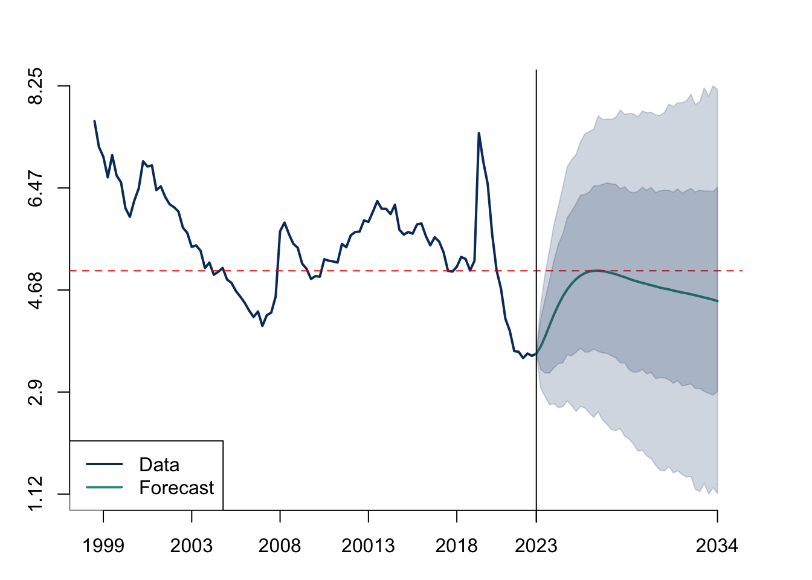
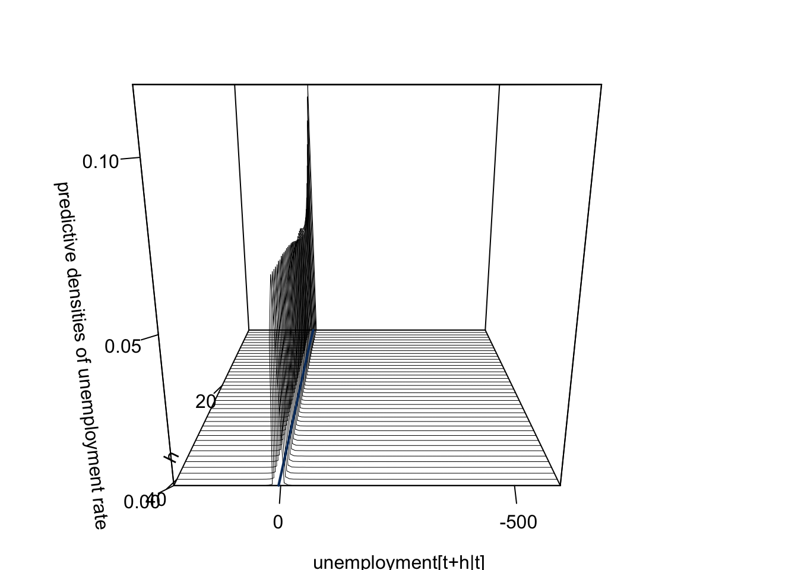
Final model
The final model is the combination of Minnesota prior, dummy observation prior and regime change to account for heteroskedasticity.
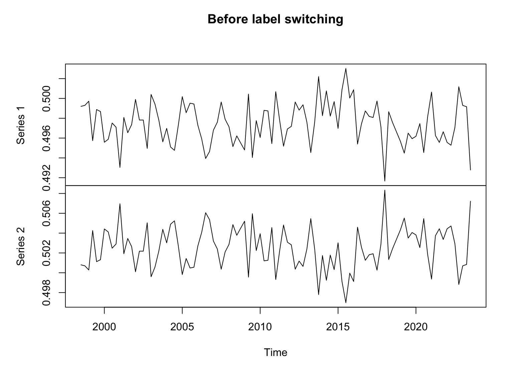
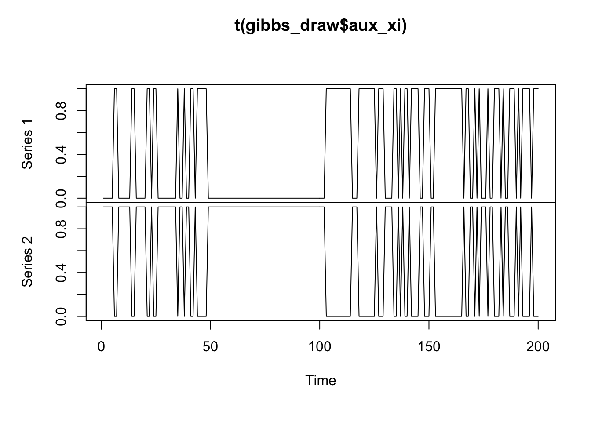
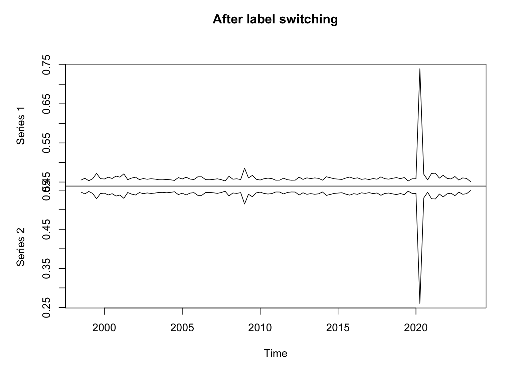
Forecasting
Basic model
The forecasting process can be done with the following code.
forecast <- function(S, sample_A, sample_Sigma, Y, p, h) {
# Initialize the array to store forecasts
Y.h <- array(NA, c(h, N, S))
# Loop over each sample
for (s in 1:S) {
A.posterior.draw <- sample_A[,,s]
Sigma.posterior <- sample_Sigma[,,s]
x.Ti <- Y[(nrow(Y) - p + 1):nrow(Y),]
x.Ti <- x.Ti[p:1,]
# Forecast h steps ahead
for (i in 1:h) {
x.T <- c(1, as.vector(t(x.Ti)))
Y.f <- rmvnorm(1, mean = x.T %*% A.posterior.draw, sigma = Sigma.posterior)
x.Ti <- rbind(Y.f, x.Ti[1:(p - 1),])
Y.h[i,,s] <- Y.f[1:2]
}
}
return(Y.h)
}[1] "<table>\n<caption>Posterior A means and s.d. deviation table</caption>\n <thead>\n <tr>\n <th style=\"text-align:right;\"> 1 </th>\n <th style=\"text-align:right;\"> 2 </th>\n <th style=\"text-align:right;\"> 3 </th>\n <th style=\"text-align:right;\"> 4 </th>\n <th style=\"text-align:right;\"> 5 </th>\n <th style=\"text-align:right;\"> 6 </th>\n <th style=\"text-align:right;\"> 7 </th>\n <th style=\"text-align:right;\"> 8 </th>\n <th style=\"text-align:right;\"> 9 </th>\n <th style=\"text-align:right;\"> 10 </th>\n <th style=\"text-align:right;\"> 11 </th>\n <th style=\"text-align:right;\"> 12 </th>\n <th style=\"text-align:right;\"> 13 </th>\n <th style=\"text-align:right;\"> 14 </th>\n <th style=\"text-align:right;\"> 15 </th>\n <th style=\"text-align:right;\"> 16 </th>\n <th style=\"text-align:right;\"> 17 </th>\n </tr>\n </thead>\n<tbody>\n <tr>\n <td style=\"text-align:right;\"> 0.136077 </td>\n <td style=\"text-align:right;\"> 0.960000 </td>\n <td style=\"text-align:right;\"> -0.021506 </td>\n <td style=\"text-align:right;\"> 0.053533 </td>\n <td style=\"text-align:right;\"> -0.162047 </td>\n <td style=\"text-align:right;\"> -0.037728 </td>\n <td style=\"text-align:right;\"> 0.003492 </td>\n <td style=\"text-align:right;\"> 0.014125 </td>\n <td style=\"text-align:right;\"> 0.154908 </td>\n <td style=\"text-align:right;\"> -0.051878 </td>\n <td style=\"text-align:right;\"> 0.006933 </td>\n <td style=\"text-align:right;\"> 0.006051 </td>\n <td style=\"text-align:right;\"> 0.036237 </td>\n <td style=\"text-align:right;\"> 0.028663 </td>\n <td style=\"text-align:right;\"> 0.002400 </td>\n <td style=\"text-align:right;\"> 0.004038 </td>\n <td style=\"text-align:right;\"> -0.000543 </td>\n </tr>\n <tr>\n <td style=\"text-align:right;\"> 3.317267 </td>\n <td style=\"text-align:right;\"> 0.119860 </td>\n <td style=\"text-align:right;\"> 0.342575 </td>\n <td style=\"text-align:right;\"> 0.366206 </td>\n <td style=\"text-align:right;\"> 0.111462 </td>\n <td style=\"text-align:right;\"> 0.132343 </td>\n <td style=\"text-align:right;\"> 0.205321 </td>\n <td style=\"text-align:right;\"> 0.207407 </td>\n <td style=\"text-align:right;\"> 0.147811 </td>\n <td style=\"text-align:right;\"> 0.102596 </td>\n <td style=\"text-align:right;\"> 0.140604 </td>\n <td style=\"text-align:right;\"> 0.141155 </td>\n <td style=\"text-align:right;\"> 0.107893 </td>\n <td style=\"text-align:right;\"> 0.078081 </td>\n <td style=\"text-align:right;\"> 0.106231 </td>\n <td style=\"text-align:right;\"> 0.106277 </td>\n <td style=\"text-align:right;\"> 0.072322 </td>\n </tr>\n <tr>\n <td style=\"text-align:right;\"> 0.005136 </td>\n <td style=\"text-align:right;\"> 0.005730 </td>\n <td style=\"text-align:right;\"> 0.998521 </td>\n <td style=\"text-align:right;\"> -0.000516 </td>\n <td style=\"text-align:right;\"> 0.001196 </td>\n <td style=\"text-align:right;\"> 0.001224 </td>\n <td style=\"text-align:right;\"> -0.000218 </td>\n <td style=\"text-align:right;\"> -0.000099 </td>\n <td style=\"text-align:right;\"> 0.000603 </td>\n <td style=\"text-align:right;\"> -0.002387 </td>\n <td style=\"text-align:right;\"> -0.000018 </td>\n <td style=\"text-align:right;\"> -0.000020 </td>\n <td style=\"text-align:right;\"> -0.000633 </td>\n <td style=\"text-align:right;\"> -0.001204 </td>\n <td style=\"text-align:right;\"> 0.000047 </td>\n <td style=\"text-align:right;\"> -0.000021 </td>\n <td style=\"text-align:right;\"> -0.001251 </td>\n </tr>\n <tr>\n <td style=\"text-align:right;\"> 0.109550 </td>\n <td style=\"text-align:right;\"> 0.003935 </td>\n <td style=\"text-align:right;\"> 0.011301 </td>\n <td style=\"text-align:right;\"> 0.012069 </td>\n <td style=\"text-align:right;\"> 0.003672 </td>\n <td style=\"text-align:right;\"> 0.004373 </td>\n <td style=\"text-align:right;\"> 0.006761 </td>\n <td style=\"text-align:right;\"> 0.006855 </td>\n <td style=\"text-align:right;\"> 0.004867 </td>\n <td style=\"text-align:right;\"> 0.003395 </td>\n <td style=\"text-align:right;\"> 0.004615 </td>\n <td style=\"text-align:right;\"> 0.004639 </td>\n <td style=\"text-align:right;\"> 0.003564 </td>\n <td style=\"text-align:right;\"> 0.002553 </td>\n <td style=\"text-align:right;\"> 0.003507 </td>\n <td style=\"text-align:right;\"> 0.003504 </td>\n <td style=\"text-align:right;\"> 0.002386 </td>\n </tr>\n</tbody>\n</table>\n\n<table>\n<caption>Posterior Sigma means and s.d. table</caption>\n <thead>\n <tr>\n <th style=\"text-align:right;\"> 1 </th>\n <th style=\"text-align:right;\"> 2 </th>\n <th style=\"text-align:right;\"> 3 </th>\n <th style=\"text-align:right;\"> 4 </th>\n </tr>\n </thead>\n<tbody>\n <tr>\n <td style=\"text-align:right;\"> 0.184892 </td>\n <td style=\"text-align:right;\"> -0.002195 </td>\n <td style=\"text-align:right;\"> -0.000112 </td>\n <td style=\"text-align:right;\"> -0.031063 </td>\n </tr>\n <tr>\n <td style=\"text-align:right;\"> 0.026188 </td>\n <td style=\"text-align:right;\"> 0.000644 </td>\n <td style=\"text-align:right;\"> 0.000065 </td>\n <td style=\"text-align:right;\"> 0.016407 </td>\n </tr>\n <tr>\n <td style=\"text-align:right;\"> -0.002195 </td>\n <td style=\"text-align:right;\"> 0.000201 </td>\n <td style=\"text-align:right;\"> 0.000004 </td>\n <td style=\"text-align:right;\"> 0.000537 </td>\n </tr>\n <tr>\n <td style=\"text-align:right;\"> 0.000644 </td>\n <td style=\"text-align:right;\"> 0.000029 </td>\n <td style=\"text-align:right;\"> 0.000002 </td>\n <td style=\"text-align:right;\"> 0.000531 </td>\n </tr>\n</tbody>\n</table>"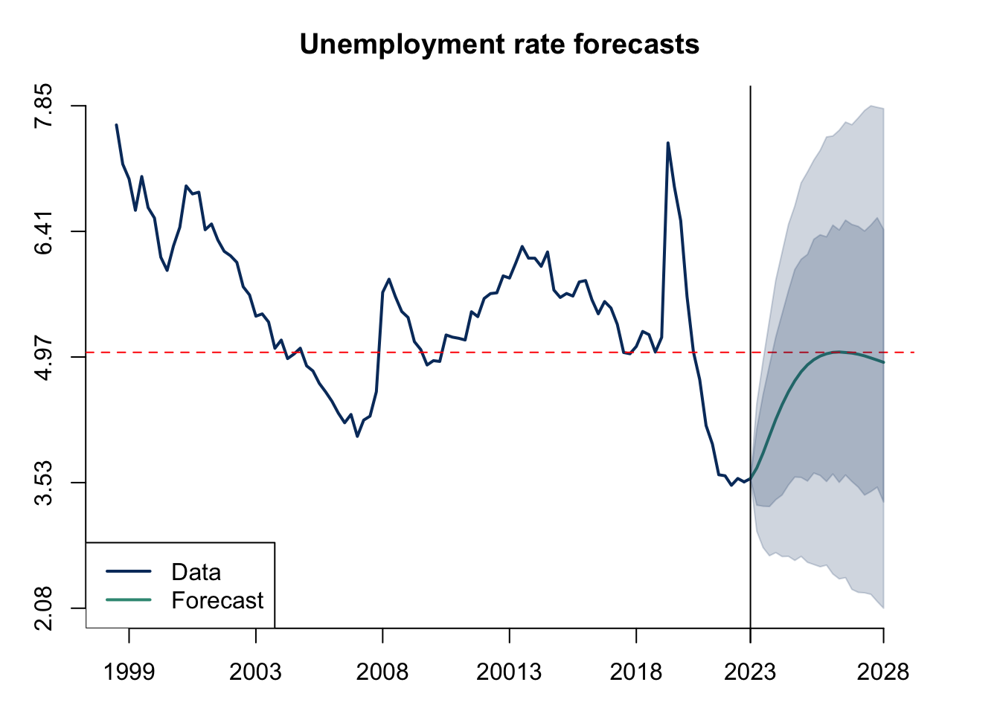
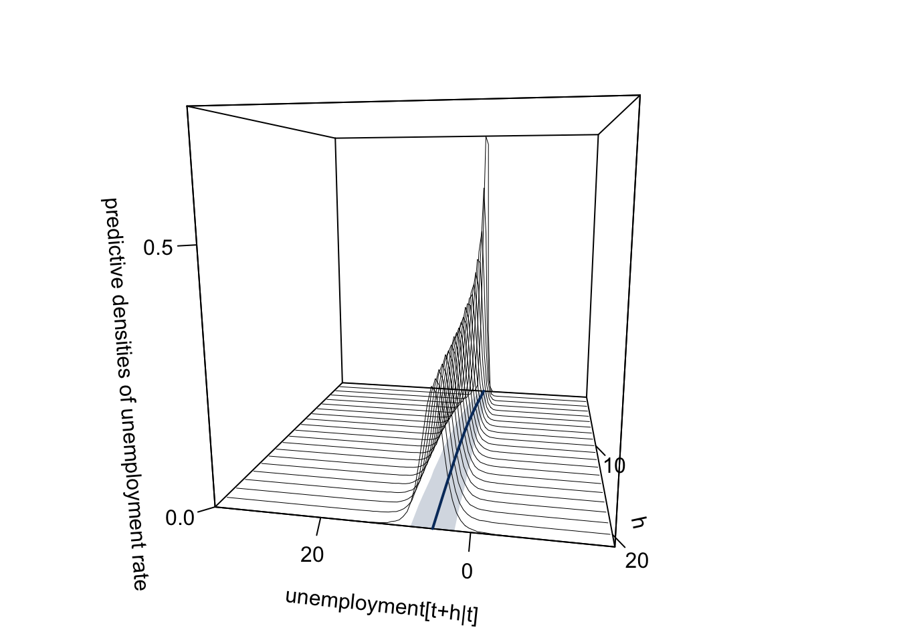
The plot of point forecast and density for 21 periods ahead, equivalent to 21 quarters or 5 years and 1 quarter from Q4 2023 to Q4 2028 shows a clear upward trend. The confidence interval is quite large. The unemployment rate seems to converge to the mean and has a slight downward trend in the last horizons.
For the 3D plot of the density, we can see that the further the period ahead, the density is more dispersed since the data is become less informative as horizon increases.
Extension 1
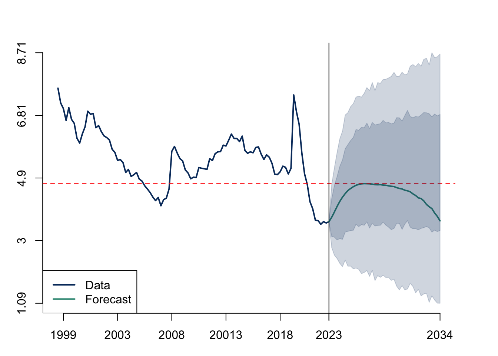
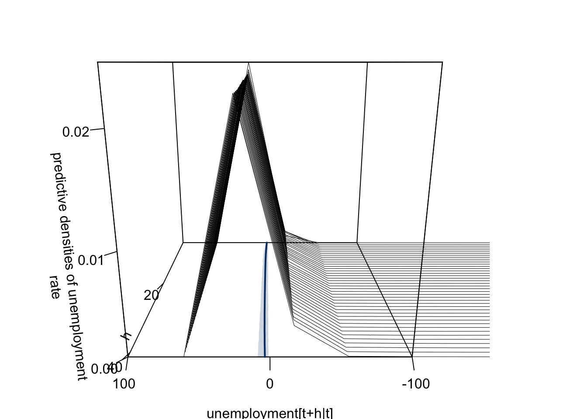
The plot of forecast for the dummy observation prior doesn’t show any significant differences visually. The confidence interval narrowed insignificantly.
Extension 2
After the regimes are correctly placed, we can forecast h-step ahead using the posterior draws.
Markov_forecast <- function(S, sample, Y, p, h) {
N <- ncol(Y)
# Initialize the array to store forecasts
Y.h = array(NA, c(h, 2, S))
for (s in 1:S){
A.posterior.draw1 = sample$A.posterior1[,,s]
A.posterior.draw2 = sample$A.posterior2[,,s]
Sigma.posterior1 = sample$Sigma.posterior1[,,s]
Sigma.posterior2 = sample$Sigma.posterior2[,,s]
T = dim(sample$xi)[2]
x.Ti = Y[(nrow(Y)-p+1):nrow(Y),]
x.Ti = x.Ti[p:1,]
P_h = sample$P[,,s] %*% sample$xi[,T,s] # Initializing P_h
for (i in 1:h){
x.T = c(1, as.vector(t(x.Ti)))
if (i > 1) { # Only update P_h if i > 1
P_h = sample$P[,,s] %*% P_h
}
sample_m = sample.int(2,1, prob=as.numeric(P_h))
if (sample_m == 1) {
A.posterior.draw = A.posterior.draw1
Sigma.posterior = Sigma.posterior1
} else {
A.posterior.draw = A.posterior.draw2
Sigma.posterior = Sigma.posterior2
}
Y.f = rmvnorm(1, mean = x.T %*% A.posterior.draw, sigma = Sigma.posterior)
x.Ti = rbind(Y.f, x.Ti[1:(p-1),])
Y.h[i,,s] = Y.f[1:2]
}
}
return(Y.h)
}The plot below shows the forecast using Minnesota prior and regime change for unemployment rate.
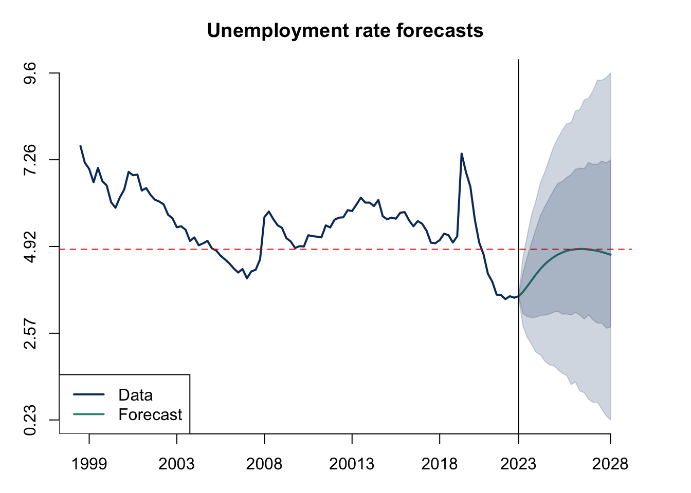
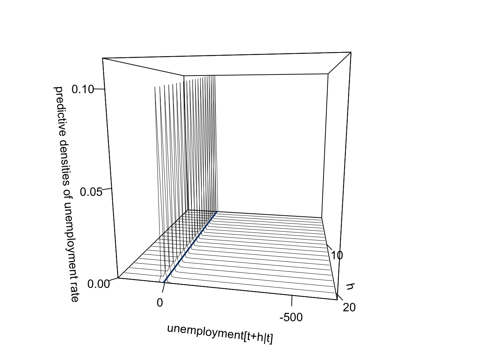
Final model
Similarly to the baseline model, the prior will be a combination of Minnesota and dummy observation prior. Then the Markov-switching Gibb-sampling is done with these new priors to obtain posterior draws
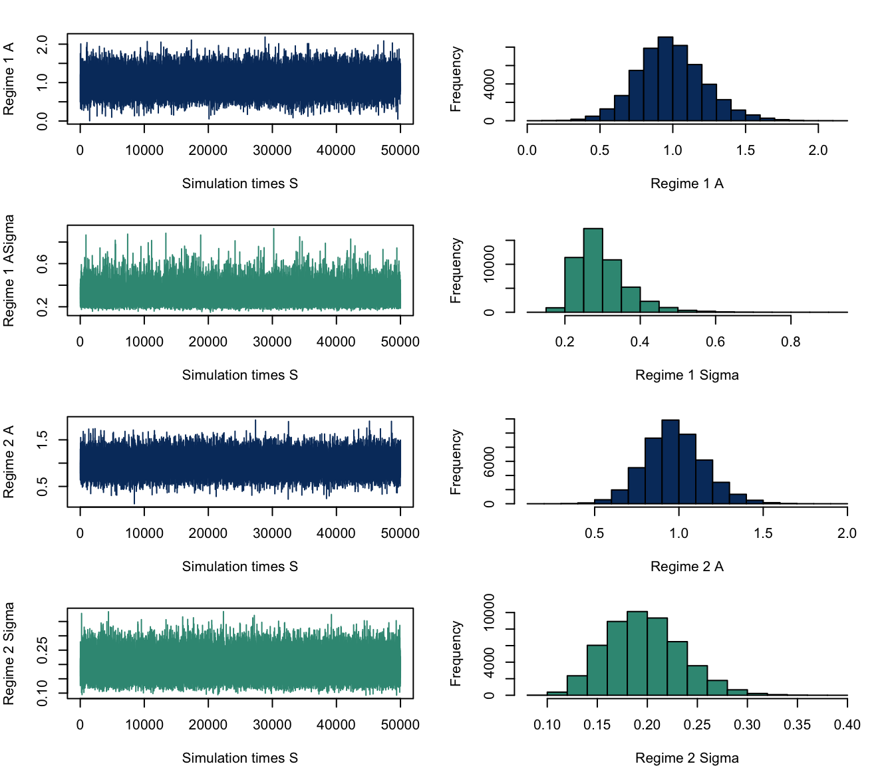
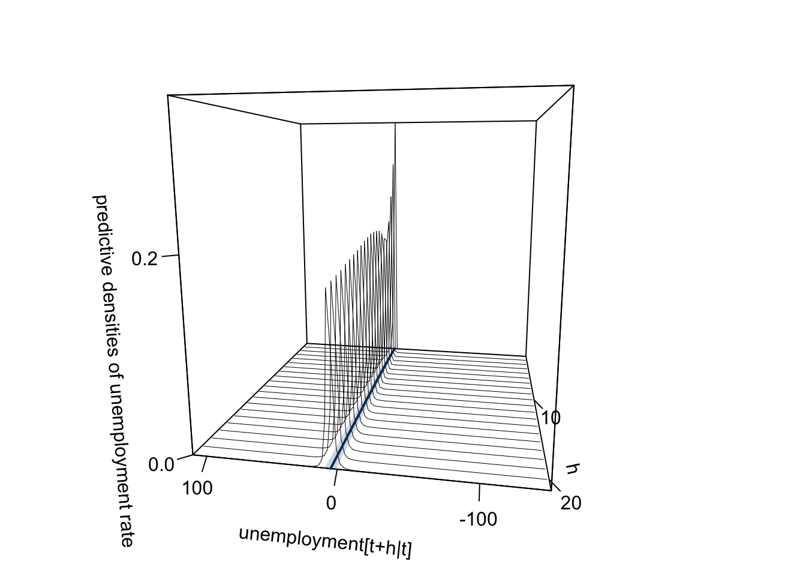
The data used is up to September 2023. The subsequent unemployment rate is released by the
| Month | ABS |
|---|---|
| Oct-23 | 3.8 |
| Nov-23 | 3.9 |
| Dec-23 | 4.0 |
| Jan-24 | 4.1 |
| Feb-24 | 3.7 |
| Mar-24 | 3.9 |
| Apr-24 | 4.1 |
| Quarter | Forecast |
|---|---|
| Q4-23 | 3.694583 |
| Q1-24 | 3.868261 |
| Q2-24 | 4.063661 |
Model Proof
1000 observations are simulated from a bi-variate Gaussian random walk process annd is used as data for the below proofs.
Basic model
| 1 | 2 |
|---|---|
| 0.077215 | -0.005406 |
| 0.994250 | -0.000284 |
| 0.001799 | 0.996006 |
| 1 | 2 |
|---|---|
| 0.980363 | 0.002589 |
| 0.002589 | 1.036363 |
Extended model
| 1 | 2 |
|---|---|
| 0.076898 | -0.007959 |
| 0.994226 | -0.000258 |
| 0.001807 | 0.995826 |
| 1 | 2 |
|---|---|
| 0.977324 | 0.002316 |
| 0.002316 | 1.032249 |
References
Woźniak, T. (2016), Bayesian Vector Autoregressions. Australian Economic Review, 49: 365-380. https://doi.org/10.1111/1467-8462.12179
Giannone, Domenico, Lenza, Michele and Primiceri, Giorgio, (2015), Prior Selection for Vector Autoregressions, The Review of Economics and Statistics, 97, issue 2, p. 436-451.
Song, Y., & Woźniak, T. (2021, March 25). Markov Switching. Oxford Research Encyclopedia of Economics and Finance. Retrieved 18 Jun. 2024, from https://oxfordre.com/economics/view/10.1093/acrefore/9780190625979.001.0001/acrefore-9780190625979-e-174.
Fu, W.; Smith, B.R.; Brewer, P.; Droms, S. Markov-Switching Bayesian Vector Autoregression Model in Mortality Forecasting. Risks 2023, 11, 152. https://doi.org/10.3390/risks11090152